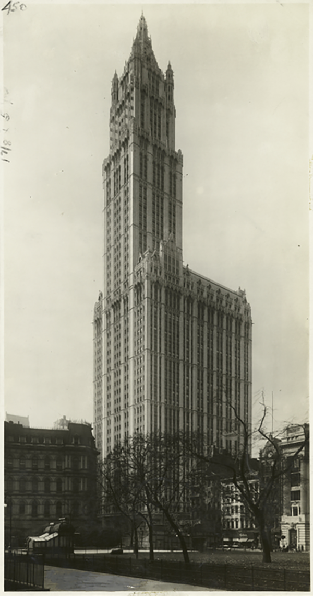

By Peggy Mihelich
Many people don’t associate the U.S. government’s development of the atomic bomb during World War II with the island of Manhattan. In fact, the program that ushered in the atomic age got its code name —“The Manhattan Project —and its start right here. In 1942, the U.S. Army Corps. of Engineers created The Manhattan District, a division meant to handle Corps work within New York City. But that was just a front. In reality, the district had no boundaries and carried out the research and testing of the first atomic weapon.
Much of the planning of the project took place in downtown Manhattan. A nondescript office tower at 270 Broadway was the location of the Corps' North Atlantic Division. In command was Lieutenant General Leslie R. Groves. Groves was important in most aspects of the bomb's development, including determining which research sites to use and which code name. Employees working at 270 Broadway conducted early research, performed administrative duties, and procured materials. But they didn’t know what they were doing. “Groves was really obsessive about secrecy,” says Robert Norris of the Natural Resources Defense Council and author of “The Manhattan Project.” Norris says Groves imposed a technique known as “compartmentalization.” Employees were told only what they needed to know to do their job and nothing else.
The Union Minière Co., which had an office at 25 Broadway in the Cunard Building, sold 1,250 metric tons of uranium ore to the U.S. Army for the Manhattan Project.
At 233 Broadway, just a short walk from the Corps' North Atlantic Division, is the Woolworth building. Groves recruited M.W. Kellogg, a chemical company, to rent office space at 233 and tasked them with building a plant in Oak Ridge to enrich uranium ore that would end up in the Little Boy Hiroshima bomb. Klaus Fuchs, the famous atomic spy, worked at the Woolworth Building before being sent to Los Alamos.
The Woolworth Building was home to offices tied to the Manhattan Project. (New York Public Library Digital Collections)
The company mining the ore, the Union Minière Company, had an office located at 25 Broadway in the Cunard Building. “A Belgian named Edgar Sengier owned uranium mines in the Congo [and] brought barrels of uranium ore to New York harbor. He put it on Staten Island in a warehouse,” says Norris. “Groves heard about it and sent his assistant to 25 Broadway to meet with Sengier and buy 1,250 metric tons of uranium ore. It got the project off to a very fast start.” Today 25 Broadway is most famous for being the site of the “Charging Bull” statue often associated with nearby Wall Street and the New York Stock Exchange. Norris says there are 10 Manhattan sites with roots to the a-bomb. He explores them in his book and you can, too, via his 36-page guide.
Connecting to Device
Device is Ready